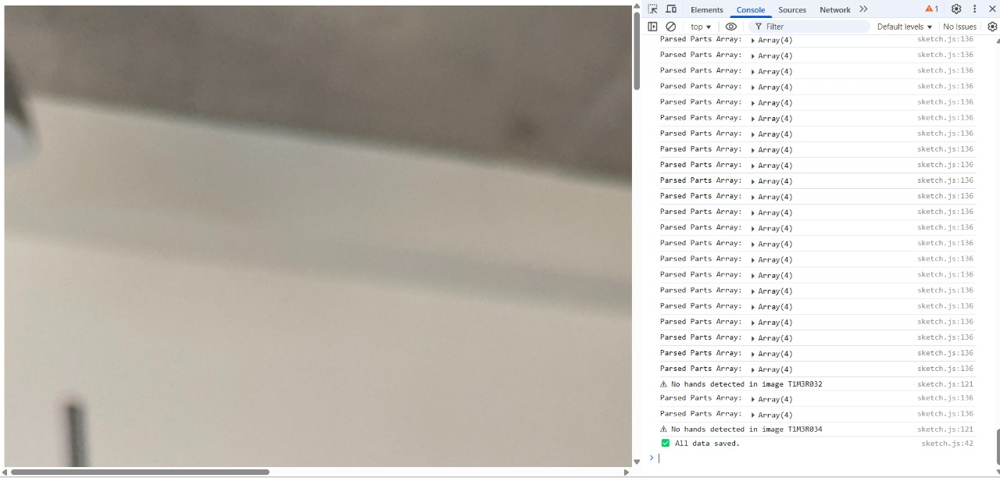
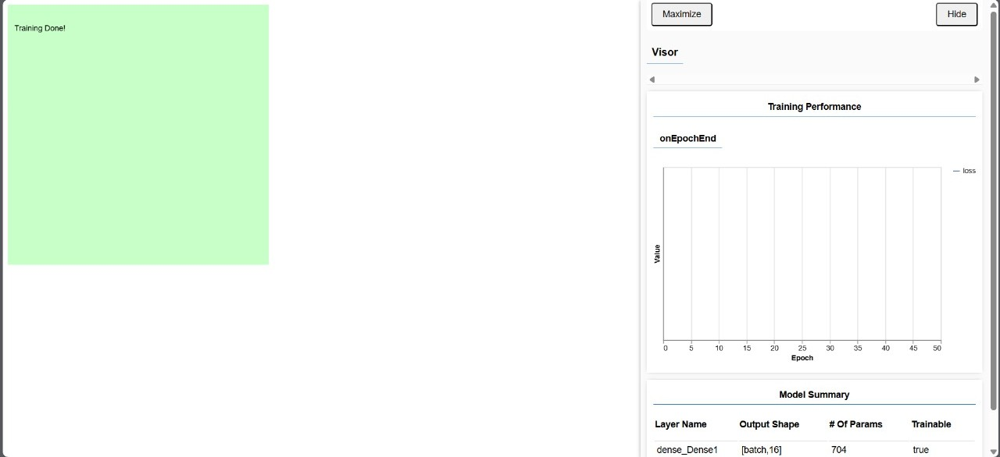
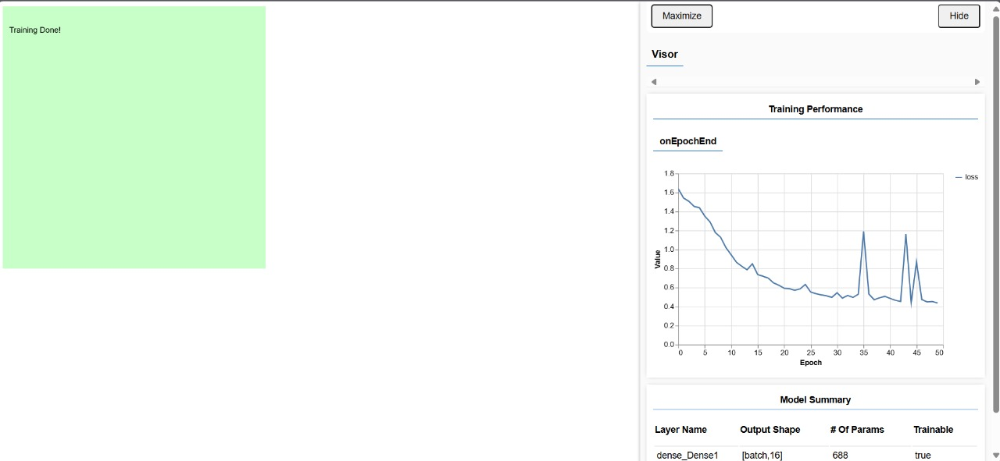
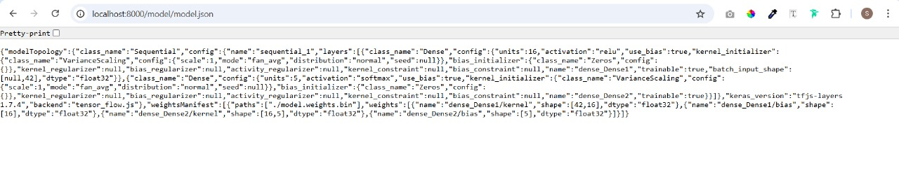

A2: Dance Mudra Detection
Sara Saju, Diya Bijoy, Bunyan Usman, Ayush Garg and Sheil Srimany.
This project uses ml5.js and p5.js to build a real-time mudra recognition system. Based on the recognized mudra, the system plays a corresponding audio track — specifically, Carnatic/Bharatanatyam based classical music for each gesture.
Main Tools Used
p5.js (Locally): Used for handling the webcam feed, drawing visuals, sound integration, and processing CSV files locally to extract names, paths of images, and the 21 keypoints data.
ml5.js: For using the handpose model and integrating a trained neural network.
Neural Network Model: Trained using your own dataset of hand images.
HTML/CSS: To build the webpage interface and display live predictions.
VS Code: Used for training both the machine learning (ML) and convolutional neural network (CNN) models.
Python: Set up the local server for hosting the project and organizing the initial CSV files with image names and paths.
AI: Refined the code structure for optimal performance, with references from the official ml5.js documentation.
Process
We began by taking images of people performing five mudras: Arala, Kapita, Kartari, Kataka Mukha, and Mayura.
The images were categorized into separate folders and uploaded to Google Drive.
We used Python to generate a file called path2.csv, which contains the name and path of each image.
This CSV file, along with the images, was then used to extract the 21 keypoints for each image using the handpose model, resulting in a new file: hand_keypoints.csv.
We trained a multi-layer perceptron (MLP) model using this data and received three output files:
- model.json
- model_meta.json
- model.weights.bin
Audio clips for each varnam were sourced from YouTube and added to the project.
These files were integrated into p5 for live mudra detection using the webcam and corresponding audio.
Throughout the process, we ran multiple tests using smaller image sets and CSV files to ensure each part worked before scaling up. Even with this testing, we encountered several challenges when using the full dataset in the final implementation. 
Link to live detection
Link to csv file
Link to training-cnn
Link to training-mlp
Problems we ran into
- We had an issue where the Handpose model was detecting 43 points instead of 42. This was because it included an extra “which hand” point. To fix it, we removed that point from the CSV file. After that, the graph showed up properly without any NaN errors.


We used http://localhost:8000/model/model.json to load our trained model because browsers do not allow direct access to local files for security reasons. By running a local server with python -m http.server 8000, we could load files like model.json and audio properly. This made it possible to test the project as if it were live on a real website. 
We explored using a Convolutional Neural Network to train our model with TensorFlow, but ran into issues. CNNs requires a large amount of image data and our dataset was too small to train the model effectively. Because of this, we switched to using a Multi-Layer Perceptron.
We encountered several issues with the CSV files during the preparation of our dataset. Initially, we tried to extract the 21 keypoints directly by feeding a folder of images into our code. However, this approach led to a lot of missing data—many images failed to return any coordinates.
We also attempted a manual method to estimate approximate values, but this didn’t work either.
The issue was eventually resolved with help from Aishwarya’s team. They provided us with the initial code to extract the keypoints into a CSV file and suggested that we first generate a separate CSV file (path2.csv) containing the name and path of each image. Using this file, along with the images, we were able to feed the data into the detection model more effectively and extract the 21 hand keypoints. While some images still couldn’t be read—possibly due to background obstructions—the overall number of missing entries was significantly reduced.